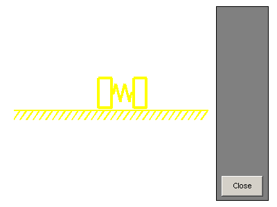
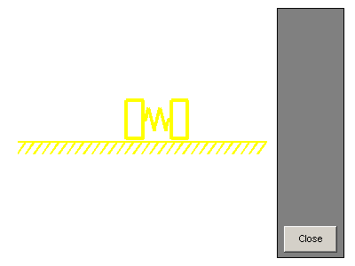

Double Spring Mass System
This system models a double spring-mass-damper system with a periodically varying forcing function. Associated with the demo is an animation function that will automatically open a figure window and display to it. In this system, the only sensor is attached to the mass on the left, and the actuator is attached to the mass on the left. State estimation and LQR control are used.
 
